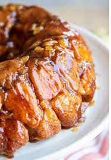

Monkey Bread
Ingredients

- 18 frozen dinner rolls (preferably Rhoades brand)
- 1/2 cup of butter
- 1/2 cup of brown sugar
- 2 tsp od butterscotch pudding powder (cook and serve - not instant)
- 1/2 cup of chopped pecans
- 1 tsp of cinnamon
Instructions
- Sprinkle pudding, cinnamon, and nuts in the bottom of a 13x9 baking pan.
- Place the frozen rolls on the pan
- Melt butter and sugar then pour over the top of the rolls.
- Cover with dish towel and place in oven (off) overnight
- In the morning, remove from oven and preheat oven to 350°f.
- Once preheated cook for 20-25 minutes or until golden brown.
- Flip out of the cokkie sheet.
[Back to Breads]
[Home]